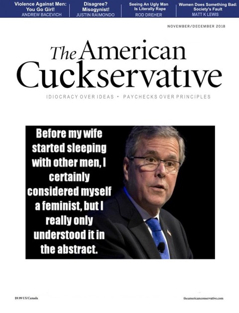
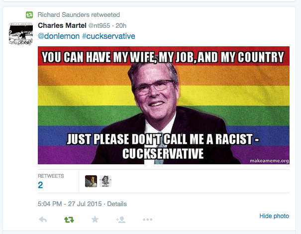
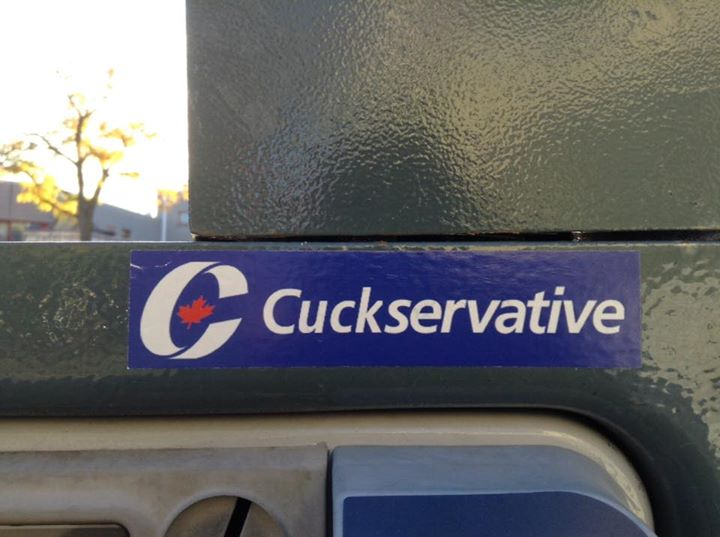

Cuck Take on Cuck Fight - Sloan Edition
February 22nd, 2021
Prepare thineself, goy, this is gonna be some of the absolute cuckiest Controlled Opposition shit you have ever read. I actually got AIDS while reading this unfiltered, and I hope that my commentary can shield you from that. For backstory, while I think you'll get this fairly quickly, this is the Cuckservative Defense of Derek Sloan getting squeezed out of the party by Erin O'Toole. For contrast, my article is here. I'd highly recommend you read that before you read this.
The Bridgehead:
TDC_ARTICLE_START
I’ll bet there’s a lot of chortling going on in the Prime Minster’s Office right now over Erin O’Toole’s latest Wile E. Coyote move. On January 17, O’Toole released a lengthy statement repudiating racism and promising that the Conservative Party is very, very inclusive. He reiterated that he is pro-choice, too, in case anyone was wondering and as if that had anything to do with it. The statement was widely seen as a bid to distance the party from the GOP after the Capitol Hill Riot, which is apparently necessary because as we know, the Conservative Party heavyweights are absolutely determined to spend their time reacting to Liberal mischaracterizations rather than articulating an alternative vision that attracts voters.
TDC_ARTICLE_STOP

Yeah, this is gonna be more of a "point and laugh," if for our sanities more than anything else. The above piece hasn't quite crossed the line yet, but it's already gay. Like I already taste the penis trying to be shoved in my mouth and it's sickening.
TDC_ARTICLE_START
But the open letter wasn’t enough. O’Toole apparently wanted to prove that he was really not racist, in case anyone besides Trudeau’s oppo shop actually thinks he is. And so the Conservative Party appears to have set up Derek Sloan, a leadership race runner-up and consistent target of progressive ire, as the fall guy. The day after O’Toole’s letter explaining why the Conservative Party basically has a COEXIST sticker on the bumper, left-wing smear machine Press Progress released a story indicating that Derek Sloan had “accepted” a donation of $131 from Paul Fromm, who is apparently a neo-Nazi. Of course, Sloan received over 13,000 donations, and obviously had no idea who Fromm was and certainly didn’t accept the money himself due to Nazi sympathies. Nonetheless, O’Toole told Press Progress he was “outraged,” which is obviously untrue unless O’Toole actually thinks that Sloan intentionally accepted money from a neo-Nazi, in which case he should come out and say that.
TDC_ARTICLE_STOP

"True conservatism is not judging a man by the colour of his skin, but by the taste of his cock in your mouth."
TDC_ARTICLE_START
In fact, it is more likely that O’Toole was thrilled. What a coincidence that the very day after his not-racist letter, the perfect way for him to prove he was not racist presented itself—and allowed him to get rid of a pesky former rival, to boot! He promptly announced that he would be initiating proceedings to boot Sloan from caucus. Sloan promptly pointed out Fromm had donated under the name Fredrick Fromm; that he’d called for the donation to be returned immediately after discovering Fromm’s associations; that the Conservative Party had accepted and processed the donation and taken a 10% cut; and that, in short, O’Toole was attempting to hold Sloan to a standard that the party itself had not held. Presumably O’Toole spent months memorizing long lists of obscure racist crackpots and their aliases to ensure his campaign was as pure as the wind-driven snow—I used to work on campaigns combatting anti-Semitism, and I wouldn’t have recognized the name “Frederick Fromm.”
TDC_ARTICLE_STOP

"After accepting all the anti-White Premises, my low testosterone cucklet cucked really hard. It is absolutely ridiculous to think that he didn't cuck hard enough on this issue. This was 10/10 cucking and apparently it wasn't enough for Erin O'Toole. Look how absurd the Conservative Leadership is!"
TDC_ARTICLE_START
What this looks like is an incredibly clumsy attempt by O’Toole to prove that he’s not racist-
TDC_ARTICLE_STOP
 Okay I can't fucking take it any more. I counted and after this last outburst, there are still two paragraphs to go. In those paragraphs, he uses "racist," three more times, and "nazi," twice. In all occasions, it's the "how dare he? I'm not really *insertBadWord, why look how cucky we are? How could anyone as impotent and cucky as us be accused of *insertBadWord. Ridiculous!".
Frankly I find Donor-Left media actually more interesting these days, because it is more openly anti-White/Pro-Pervert, but also because the days of there being any interesting ideas in Donor-Right publications are long in the rearview.
I'm not kidding when I say please read my article and compare the two. Do you see how my article is so much better written and informative? And I'm not even getting paid for this.
Okay I can't fucking take it any more. I counted and after this last outburst, there are still two paragraphs to go. In those paragraphs, he uses "racist," three more times, and "nazi," twice. In all occasions, it's the "how dare he? I'm not really *insertBadWord, why look how cucky we are? How could anyone as impotent and cucky as us be accused of *insertBadWord. Ridiculous!".
Frankly I find Donor-Left media actually more interesting these days, because it is more openly anti-White/Pro-Pervert, but also because the days of there being any interesting ideas in Donor-Right publications are long in the rearview.
I'm not kidding when I say please read my article and compare the two. Do you see how my article is so much better written and informative? And I'm not even getting paid for this.

Okay I can't fucking take it any more. I counted and after this last outburst, there are still two paragraphs to go. In those paragraphs, he uses "racist," three more times, and "nazi," twice. In all occasions, it's the "how dare he? I'm not really *insertBadWord, why look how cucky we are? How could anyone as impotent and cucky as us be accused of *insertBadWord. Ridiculous!".
Frankly I find Donor-Left media actually more interesting these days, because it is more openly anti-White/Pro-Pervert, but also because the days of there being any interesting ideas in Donor-Right publications are long in the rearview.
I'm not kidding when I say please read my article and compare the two. Do you see how my article is so much better written and informative? And I'm not even getting paid for this.